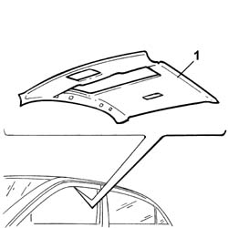

7040H16 Roof LINING for versions with sun roof - R.R.
- Path
- Procedures > 70 FITTINGS > 7040 BODY INTERIOR UPHOLSTERY AND TRIM > 7040H ROOF PANEL AND PILLAR LINING > 7040H16 Roof LINING for versions with sun roof - R.R.
- Kind
- repair procedure (removal / refitting; the operation number is the code)
- Applies to
- all engines; all production periods
- Interactive page
- https://sloeber94.github.io/elrnDB-lThss/en/#/458466
Applies to: all engines; all production periods
 Removing
Removing
 Refitting
Refitting- Disconnect the negative battery terminal.
See in Op. 7040H30 FRONT PILLAR TRIM (one), left or right - R.R.
- [left and right]
See in Op. 7040H36 CENTRE PILLAR TRIM LOWER ELEMENT (one), left or right - R.R.
- [left and right]
See in Op. 7040H38 CENTRE PILLAR TRIM UPPER ELEMENT (one), left or right - R.R.
- [left and right]
See in Op. 7040H46 Left or right rear pillar upper trim (one) - R.R.
- [left and right]
See in Op. 7065C30 interior l/h or r/h grab handle (one) - r+r
- [front and rear]
See in Op. 7065C34 SUN VISOR (one) left or right - R.R.
- [left and right]
See in Op. 7040E50 Front MODULAR COURTESY LIGHT UNIT - R.R.
See in Op. 7040E16 rear courtesy light - r+r
See in Op. 7030B64 Sun roof control SWITCH - R.R.
See in Op. 7210E36 front side door
- [passenger side]
See in Op. 7045A10 FRONT SEAT (one) left or right - R.R.
- [passenger side]
1. Release the roof lining from the housing and remove it.

Applies to: all engines; all production periods
Refitting
Removing- Check that the lining is not damaged.
- Fit the lining in position.
See in Op. 7045A10 FRONT SEAT (one) left or right - R.R.
- [passenger side]
See in Op. 7210E36 front side door
- [passenger side]
See in Op. 7030B64 Sun roof control SWITCH - R.R.
See in Op. 7040E16 rear courtesy light - r+r
See in Op. 7040E50 Front MODULAR COURTESY LIGHT UNIT - R.R.
See in Op. 7065C34 SUN VISOR (one) left or right - R.R.
- [left and right]
See in Op. 7065C30 interior l/h or r/h grab handle (one) - r+r
- [front and rear]
See in Op. 7040H46 Left or right rear pillar upper trim (one) - R.R.
- [left and right]
See in Op. 7040H38 CENTRE PILLAR TRIM UPPER ELEMENT (one), left or right - R.R.
- [left and right]
See in Op. 7040H36 CENTRE PILLAR TRIM LOWER ELEMENT (one), left or right - R.R.
- [left and right]
See in Op. 7040H30 FRONT PILLAR TRIM (one), left or right - R.R.
- [left and right]
- Connect the negative battery terminal.
Topics linked from this page (11)
- 7030B64 Sun roof control SWITCH - R.R.
- 7040E16 rear courtesy light - r+r
- 7040E50 Front MODULAR COURTESY LIGHT UNIT - R.R.
- 7040H30 FRONT PILLAR TRIM (one), left or right - R.R.
- 7040H36 CENTRE PILLAR TRIM LOWER ELEMENT (one), left or right - R.R.
- 7040H38 CENTRE PILLAR TRIM UPPER ELEMENT (one), left or right - R.R.
- 7040H46 Left or right rear pillar upper trim (one) - R.R.
- 7045A10 FRONT SEAT (one) left or right - R.R.
- 7065C30 interior l/h or r/h grab handle (one) - r+r
- 7065C34 SUN VISOR (one) left or right - R.R.
- 7210E36 front side door